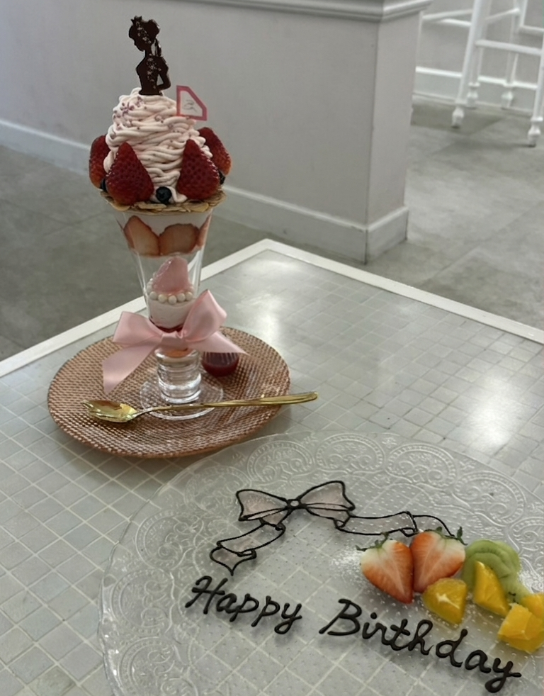
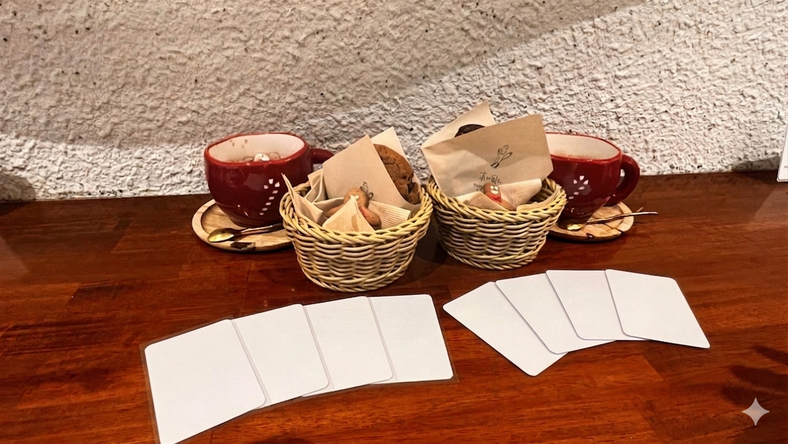

- トップ >
- 推し活おすすめのお店紹介
推し活おすすめの店紹介
自分が訪れたお店の紹介を行います。
- ビジュエルパフェ/Bijewl Parfait
- 木と風と。
ビジュエルパフェ

まるで宝石のように美しく彩られたパフェが楽しめる人気カフェです。
季節のフルーツやこだわりのスイーツを使用した華やかなパフェは、見た目も味も魅力たっぷりです。
推し活や友人とのカフェタイムにもぴったりで、写真映えする空間の中で特別なひとときを過ごせます。
住所 〒734-0022 広島県広島市南区東雲1丁目3-22
電話 082-236-9215
営業時間 10:00〜18:00 金曜日、土曜日は不定期に22:00まで営業
定休日 水曜日 (祝日の場合は、通常営業)
公式サイトビジュエルパフェ/Bijewl Parfait
このページの先頭へ
木と風と。

駅構内に位置し、アクセスしやすいカフェです。
木の温もりを感じられる落ち着いた店内で、こだわりのドリンクやスイーツを楽しめます。
ゆったりとした時間を過ごせるため、ショッピングやお出かけの合間の休憩にもおすすめです。
住所 〒732-0822 広島県広島市南区松原町1-2 広島駅 ekie KITCHEN 1F
電話 082-262-5031
営業時間 10:00〜21:00
公式サイト木と風と。
このページの先頭へ